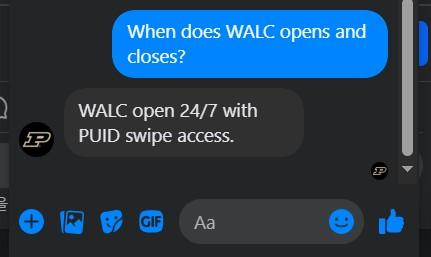

Overview
Developed and configured a Watson Assistant-powered Student Advisor Chatbot designed to assist Purdue University students with common campus inquiries. The chatbot handles both general and specific student questions through dynamic dialog skills, improving accessibility and reducing the need for manual support. Key features include building location lookup and library hours retrieval.
Key Contributions
- Configured IBM Watson Assistant with custom dialog flows and intent detection
- Implemented chitchat functionalities for natural conversational interaction
- Built location-based responses to help students find Purdue buildings and libraries
- Added operating hours lookup for key campus facilities
- Tested and iterated on dialog flows to improve accuracy and user experience
Tools & Skills
Features
Location
This Chatbot assists users in locating Purdue libraries and buildings. Students can ask where a specific facility is and receive a direct, accurate answer without navigating complex campus maps.

Operation Hours
This Chatbot also aids users in discovering the operating hours of libraries and buildings. Real-time access to facility hours reduces friction and improves student scheduling and planning.
